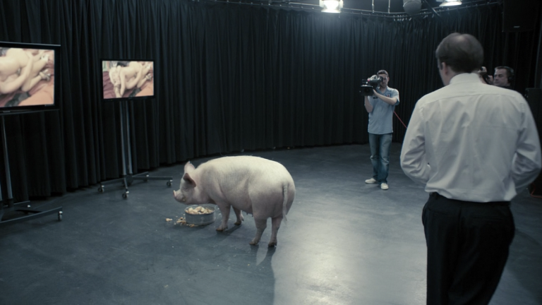

Guía de Episodios: Temporada 1

1. El Himno Nacional
El Primer Ministro Michael Callow se enfrenta a un dilema impactante cuando la Princesa Susannah es secuestrada. Para asegurar su liberación, los secuestradores exigen que realice un acto humillante y grotesco en televisión nacional.

2. Quince Millones de Méritos
En un mundo donde la gente pedalea en bicicletas estáticas para ganar "méritos", un joven llamado Bing anima a la chica que le gusta a participar en un cínico concurso de talentos para escapar de su monótona existencia.
3. Tu Historia Completa
En un futuro donde los implantes graban todo lo que ves y oyes, un abogado empieza a sospechar de la infidelidad de su esposa, usando los recuerdos grabados para alimentar una espiral de celos y paranoia.